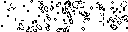

TI Launchpad:
Game of Life
Game of Life
Built for Texas Instrument's Launchpad Microprocessor using the Orbit Booster Pack hardware add-on. Conway's Game of Life is implemented on the 128x32 LCD screen, written in C. The project includes sensor integration and hardware output.
Conway’s Game of Life is a zero-player game, during which cells, based on a set of rules, can live, multiply or die. Depending on the game’s initiate state, the cells will form various patterns, which will be displayed on the Booster Pack’s OLED display.
The game of life engine is written in C, using 2 arrays. The first array represents the current state of life while the second iterates through the first array to generate the next state. After the next state is fully generated, it is compressed to a bitmap format. The 128x32 OLED display takes a row major bitmap of column mapped bytes as input. In this case, the bitmap is 4 (height/byte size) rows of 128 bytes. Since a cell is either dead or alive, each cell is represented by exactly one byte in the bitmap. The following is an example of a bitmap output by the C program:

Using the Booster Pack’s accelerometer and potentiometer, the simulated life will be dependent, not only on the size of its container, but also, on its surroundings. The potentiometer will vary the speed of growth and death, while a shake of the Launchpad and Booster Pack will wipe all life and start again. Finally, an LED that will indicate the current progression of life on the display. For example, the LED will turn from red to green when life becomes sustainable.
Source Code